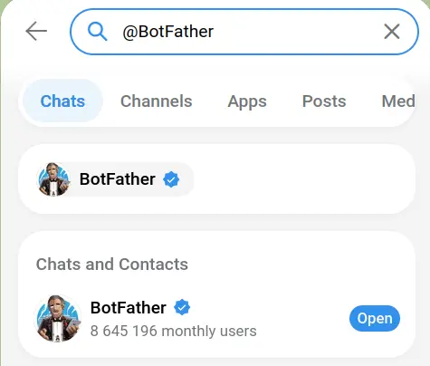
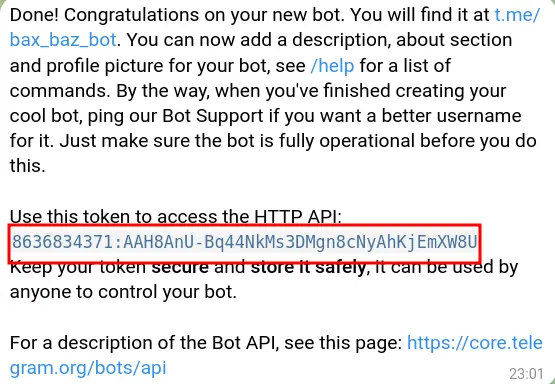
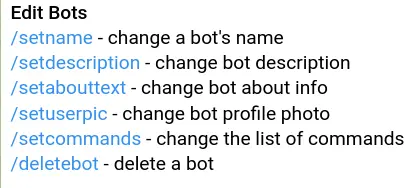

Telegram Setup
Telegram #
Telegram is a free, cloud-based instant messaging application that allows users to send texts, share large files, and make voice or video calls across multiple devices.
In this project, Telegram is used to automate alert messages. It provides a bot service, where developers can automate basic tasks without relying on human interactions. For creating this project, you need to create a bot and use them as bridge between school and parents to maintain communications by sending a detailed automated message to parent's phone.
For sign up you need to use Telegram app from your phone. After that you can easily create bot from phone or by login into web.
Account Creation #
It is not compulsory to create fresh account you can also use your existing account. If you have any account then you can skip to bot creation.
Instructions
- Open App store/Play store depending on phone's Opearting System.
- Search for Telegram, and install it.
- Now, open app and use your phone number for verification.
- Type OTP and create profile by following on-screan instructions.
- After sign up you can use mobile or desktop app or even website for creating bot.
Bot Creation #
Bot father not only help you to create bots but also help you in managing your bot by providing different options.
Instructions
- Open Telegram in app/web.
- Search for @BotFather and select official bot with blue tick.
- Click on START button or type /start and send it.
- Select /newbot from menu options.
- Then it prompted for bot name, type bot name and send.
- After that it will ask for bot's username type unique bot name ending with _bot example (foo_bot).
- Then a congratulations message will appear with bot token.
- Note down that token for future use.


Bot customization #
Its optional step, there are plenty of customization options available under main menu's Edit Bots option. You can use them to customize your bot like attaching profile picture, add description etc.
Instructions
- Type ./start and send it.
- It will show main menu options.
